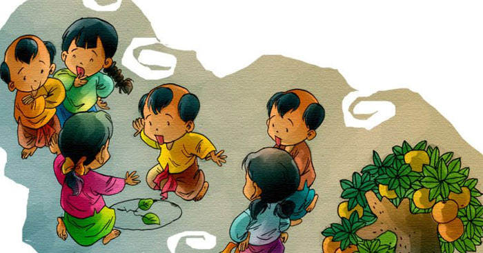

Văn chương bình dân là một trong những yếu tố cấu thành quan trọng văn học dân gian và cả văn hóa dân gian. Giữa rất nhiều thể loại văn học dân gian Việt Nam, có một loại hình được đa số quần chúng yêu thích vì gây hào hứng và kích thích sự sáng tạo, trí tuệ. Đó là câu đố dân gian.
Trong văn hóa dân gian, đặc biệt là những câu chuyện kể, câu đố dân gian xuất hiện ở rất nhiều bối cảnh, được sử dụng bởi hầu hết các tầng lớp xã hội, từ các quan trạng - qua những câu chuyện kể tôn vinh tài học và sự thông minh của người xưa đến những nông dân hát đố, hát thi, hò đối đáp, ngư dân với nghệ thuật hát bài chòi... Các nhà nghiên cứu văn hóa dân gian cho rằng: nếu về thiên về “sự”, ca dao nặng về “tình”, tục ngữ nghiêng về “lý”, thì câu đố nhằm vào “trí”. Bởi câu đố thử thách sự thông minh, nhạy bén của những người tham gia.
Đặc biệt những câu đố, câu đố dân gian Việt Nam thường có nội dung gần gũi gắn liền với đời sống, sự vật, cảnh quan, môi trường, vật dụng trong đời sống hằng ngày cứ như vậy sống trong tâm hồn trẻ thơ rồi theo họ trong suốt quãng đời.
Câu đố dân gian là gì?
Khái niệm câu đố dân gian còn là thể loại văn vần dân gian xuất phát từ sự quan sát của con người về những nét giống nhau thường thấy giữa các sự vật và hiện tượng khác nhau của thế giới khách quan. Câu đố dân gian có chức năng chủ yếu là phản ánh đặc điểm của sự vật, hiện tượng bằng phương pháp giấu tên và nghệ thuật lạ hoá, được dùng trong sinh hoạt tập thể nhằm thử tài suy đoán, kiểm tra sự hiểu biết của mọi người, đặc biệt là trẻ em, hoặc mua vui, giải trí.
Câu đố có hai nội dung cơ bản, một mặt cung cấp những tri thức thông thường về các sự vật, hiện tượng trong cuộc sống (đặc điểm hình dáng, màu sắc, công dụng, tên gọi…), mặt khác, bằng hàm ngôn, câu đố bóng gió đề cập đến những vấn đề thuộc về quan hệ xã hội của con người.
Cấu tạo câu đố dân gian
Câu đố gồm hai bộ phận: vật đố và lời đố. Mỗi bộ phận có các đặc điểm riêng.
Lời đố là một văn bản bằng văn vần, nhằm thể hiện vật đố theo bốn phương thức: tả thực, chuyển trường, chơi chữ và tá ý. Lời đố xét về nội dung và đặt trong quan hệ với vật đố, có hai đặc điểm nổi bật, đó là tính xác thực và tính lạ hoá.
1. Tính xác thực của lời đố trong câu đố dân gian
Trong quan hệ với vật đố, lời đố phải xác thực, hợp lẽ. Những chi tiết được nêu trong lời đố là những cơ sở để suy ra vật đố. Không phải các đặc điểm của vật đố (hình dáng, cách tác động, công dụng,...) đều được lời đố nêu hết, mà chỉ một vài chi tiết trong số chúng được lựa chọn. Nhưng khi đã nêu, thì các chi tiết ấy phải tương ứng một cách xác thực với vật đố (tức thông tin chứa đựng trong lời đố, so với vật đố, có thể thiếu chứ không được thừa, và chúng đều hợp lẽ).
Tính xác thực của lời đố được thể hiện qua các yếu tố hướng đến vật đố:
- Yếu tố chỉ định tổng loại, đó là cái (hay con, cây,...) gì: Yếu tố chỉ định tổng loại thường đặt ở đầu (có khi nằm cuối) lời đố, khiến lời đố trở thành một câu hỏi.
Ví dụ: “Con gì vỗ cánh bay nhanh, Không đẻ trứng lại đẻ thành con ngay?” (con dơi)
- Yếu tố chỉ nơi chốn sinh thành, hay phát huy tác dụng; Yếu tố chỉ nơi chốn sinh thành hay phát huy tác dụng của vật đố, được nêu một cách rõ ràng ở lời đố, thường gặp là: trong nhà, gần nhà, đường cái, trong bụi (thuộc vườn nhà hay cạnh lối đi), dưới hồ ao, ngoài đồng, trên núi, bên Tàu,...
Ví dụ: “Cây gì không lá, không chân, Mình vàng, không rễ, ở gần nhà ta?” (cây rơm)
Yếu tố nơi chốn có thể được dùng kết hợp để cùng xác định vật đố; chẳng hạn:
Ví dụ: “Cái trống mà thủng hai đầu, Bên ta thì có, bên Tàu thì không” (cái váy).
- Yếu tố chỉ thời gian phát sinh, phát triển; Thời gian phát sinh, phát triển của vật đố được lời đố thể hiện theo trình tự, xác thực
Ví dụ:
“Khi nhỏ, em mặc áo xanh,
Khi lớn bằng anh, em thay áo đỏ” (quả ớt)
(quả ớt khi non có màu xanh, khi chín có màu đỏ (quả ớt)
- Yếu tố chỉ công dụng, chức năng; Có một số lời đố có yếu tố chỉ công dụng, chức năng của vật đố. Đây là công dụng, chức năng xác định, đúng như vật đố vốn có.
Ví dụ: “Cái gì bao phủ khắp nơi, Không mùi không sắc mà ai cũng cần?” (không khí);
Ví dụ: “Cây to lá nhỏ chiền chiền, Non ăn, già bán lấy tiền mà tiêu” (cây tre);
- Yếu tố miêu tả vóc dáng, tính chất, hoạt động: Miêu tả vóc dáng, tính chất, hoạt động của vật đố có thể xem là yêu cầu cơ bản của lời đố. Các chi tiết được miêu tả tương ứng với các chi tiết của vật đố.
Ví dụ: Lúc bay lúc đậu cánh thời đều giương?” (con chuồn chuồn);
2. Đặc điểm của vật đố trong câu đố dân gian
Tính phổ biến của vật đố: Phạm vi của vật đố rất phong phú, đa dạng. Những sự vật, hiện tượng, sự việc được đem ra đố hầu hết là những thứ, những việc mà ai cũng từng hay, từng biết. Mỗi khi đưa ra đố cái mà đối phương chưa từng nghe thấy, thì cuộc chơi đố nhau bị huỷ bỏ ngay, vì đã vi phạm yêu cầu về sự công bằng của trò chơi (khi đố về một thứ xa lạ với đối phương, thì ngươpì đó đã nắm chắc phần thắng, sự thú vị của trò chơi do nhiều bất công nay làm mất đi: trò chơi trở thành lối độc diễn vô vị, và không còn gọi là trò chơi nữa).
Cũng do chính từ đòi hỏi vừa nói mà số câu đố về một loại sự vật chỉ một thiểu số người nào đó biết được, thường diễn ra hạn chế trong số ít người ấy, và tất nhiên, mức độ lưu truyền cũng hãn hữu. Chẳng hạn, đố về tên các vị thuốc bắc thì các thầy thuốc nắm rõ, đố về tên các quân của cỗ bài tổ tôm, bài tới, bài tây, thì chỉ người hay chơi các loại bài này mới rành, đố về tên các nhân vật trong sử sách, kinh truyện thì số người có học (vốn không nhiều) mới có khả năng giải đáp... Và thực tế sưu tầm cũng cho thấy, các loại câu đố trên không được bao lăm, thậm chí có vùng không tìm thấy câu nào.
Trừ những vật đố thuộc tự nhiên (sự vật, hiện tượng trong tự nhiên, giới sinh vật; như đố về “trăng”, “sao”, “sông”, “núi”, “sâm”, “sét”, “cây chuối”, “cây tre”, “cây rau sam”, “quả đu đủ”, “buồng cau”, “con sâu róm”, “con rắn”, “con cóc”, “con trâu”, “con chim chốc mào”, “con cá trê”...), những vật đố thuộc văn hoá (việc người làm, thức người ăn, các công cụ, vật dụng do con người tạo nên để lao động, sinh hoạt, đáp ứng cho nhu cầu cuộc sống) phản ánh việc làm và điều kiện vật chất của người Việt xưa. Tính phổ biến của vật đố được đặt trong hoàn cảnh sinh thành của chúng (hoàn cảnh ra đời của câu đố), nghĩa là đặt trong điều kiện văn hoá xã hội đất nước vào thời kì thuần nông nghiệp, tự cung tự cấp trước đây (có thể là thời kì dài từ khi hình thành nhà nước độc lập đến hết thế kỉ XIX, và giai đoạn bản lề là thế kỉ XX).
Còn đặt vào thời điểm hiện nay (đầu thế kỉ XXI), thì có những việc làm đã hoàn toàn lùi vào quá khứ, như : “rao mõ”, “kéo xe tay”,... Có những việc làm vừa mới rời đi, có thể có nơi vẫn còn tiếp diễn, như: “ươm tơ”, “kéo sợi”, “dệt vải”, “xay lúa”, “giã gạo”, “bắt chấy bỏ miệng cắn”, “mang nùn (con cúi) đi xin lửa”,... Có những việc làm mà địa bàn của chúng đang phải thu hẹp dần, như: “gánh nước”, “lợp nhà tranh”,... Số công cụ, vật dụng cũng theo đó mà nhiều thứ chỉ còntìm thấy với tư cách vật đố (và có thể có ở các nhà bảo tàng), như: “cái khố”, “cái tơi”, “cái vạch” (của nghề may tay), “hòn đá lấy lửa”, “đồng tiền cổ”,... ; hoặc còn lưu lại trong dân gian, nhưng ngày càng hiếm đi, như: “cái khung cửi”, “nồi ươm kén”, “cái xe đạp nước”, “cái quạt thóc” (quạt hòm), “cái cối xay lúa”,...; và những thứ do mức tiện lợi hạn chế hay thị hiếu thay đổi mà không còn được ưa chuộng, như: “cái yếm”, “cái đãy”, “đôi bông tai” (hình cái hoa, phía trước là nụ xoè cánh, phía sau là cuống thắt eo ở giữa), “cây bút muỗng”, “cái gáo bằng sọ dừa”,...
Tính khái quát của vật đố: Sự vật đem ra đố phải là một sự vật mà trong cảm quan ngôn ngữ của người Việt có được sự phân biệt với các sự vật khác trong cùng một chủng loại. Thí dụ, vật đố “cái cày”, phân biệt với “cái bừa”, “cái trục”, “cái cuốc”, cùng là những nông cụ; vật đố “cây ngô”, phân biệt với “cây mía”, “cây dừa”, “cây chuối”, cùng là những cây trồng; vật đố “con bò”, phân biệt với “con trâu”, “con dê”, “con lợn”, cùng là những vật nuôi; vật đố “con rắn” phân biệt với “con thỏ”, “con nhím”, “con rùa”, cùng là những con vật hoang dã,...
Một số vật đố là sinh vật ở cấp độ loài cho thấy có sự linh hoạt trong sinh hoạt đố nhau nói riêng, trong tiếng Việt nói chung. Sự linh hoạt này thể hiện mức độ quan tâm ra sao đối với sự vật chung quanh (như ‘quả dưa’ có thể nhận được sự quan tâm nhiều hơn ‘quả sung’ chẳng hạn). Và như vậy, tính khái quát của vấn đề vẫn không có gì thay đổi.
Mặt khác, tính khái quát cũng được hiểu ở sự không xác định của vật đố. ‘Cái cày’ của vật đố là cái cày nói chung, chẳng những không chỉ một cái cày cụ thể nào mà ngay cả một loài cày dùng để cày đất khô, loại cày dùng để cày ruộng nước, loại cày của một vùng quê nào đó, cũng không phải là vấn đề đặt ra. Các sự vật, hiện tượng khi trở thành vật đố đã bị tước đi những khía cạnh có tính chất cá biệt, cụ thể để chỉ còn mang những đặc điểm khái quát về chủng loại mà chúng tham gia.
Các thể loại câu đố dân gian Việt Nam
Có hai thể loại đặc trưng câu đố dân gian:
- Thứ nhất, về mục đích sáng tác, câu đố được sáng tạo nhằm phát triển tư duy cho con người, đặc biệt là trẻ em.
- Thứ hai, về hình thức thể hiện, câu đố sáng tạo ra một thế giới hình tượng ẩn dụ bằng việc sử dụng phép lạ hoá. Phép lạ hoá vốn là cách thức thể hiện hình tượng quen thuộc của thơ ca và văn chương nghệ thuật nhằm tạo ra chất lượng mới cho những gì được phản ánh, đó là hệ quả của việc sử dụng các biện pháp tu từ trong diễn đạt ngôn ngữ
Hình thức tổ chức đố cũng rất đa dạng và phong phú: Đố vui, đố có thưởng, đố có một
người, đố cho tập thể, đố trong lễ hội, đố trên các phương tiện thông tin đại chúng v.v…
Nguồn gốc hình thành câu đố dân gian
Câu đố dân gian Việt Nam là một thể loại văn học đặc sắc của người Việt, xuất phát từ sự quan sát của con người về những nét giống nhau thường thấy giữa các sự vật và hiện tượng khác nhau của thế giới khách quan. Các câu đố thường được truyền miệng từ đời này sang đời khác, từ trong làng, ra ngoài cánh đồng, từ lúc nông nhàn tới lúc vất vả lao động. Từ những câu đố cho ta thấy cái tinh tế quan sát, cách vận dụng nhiều yếu tố, thủ thuật để tạo nên những câu đố hay. Có những câu đố tục nhưng giảng thanh, có câu đố thanh giảng tục và tất nhiên là có câu đố thanh giảng thanh. Các câu đố của các cụ thì có đủ các kiến thức trong cuộc sống như đố về con gì, cây gì, loại gì,...
Tùy vùng miền mà có những câu đố và câu giải khác nhau. Và cũng tùy thời đại để có các câu đố và câu giải. Tuy vậy, câu đố đáng để rèn luyện trí óc nên hệ thống giáo dục cũng đưa các câu đố vào để phát triển trí tuệ cho trẻ em.Trước đây, tác giả của câu đố đa phần là
Hầu như những gì hằng ngày người ta thấy, tiếp xúc, sử dụng đều có thể thành câu đố như gia cụ, nhà cửa, công cụ và các hình thức lao động sản xuất, nếp sinh hoạt thường ngày, cây cỏ, động vật… Câu đố có đặc tính và đối tượng là những sự vật, sinh vật cụ thể, tồn tại khách quan, “mắt thấy, tai nghe”, do đó hầu như không thấy khái niệm triết lý, luân lý, tôn giáo và những khái niệm trừu tượng phi vật chất.
Ví dụ:
"Nhà xanh lại đóng đố xanh.
Tra đỗ trồng hành, thả lợn vào trong".
(Bánh chưng)
"Đi nằm, đứng nằm, ngồi nằm.
Nằm thì lại đứng".
(Bàn chân)
Phương thức nghệ thuật câu đố dân gian
Để dễ đọc, dễ nhớ, để tạo ấn tượng và sức hấp dẫn, các câu đố thường được dùng dưới hình thức của các thể thơ truyền thống (thơ lục bát, thơ tứ tuyệt, câu đối…). Sự hấp dẫn của câu đố, một phần quan trọng là do việc sử dụng các thủ pháp nghệ thuật rất độc đáo.
Phương pháp nhận thức và phản ánh nghệ thuật của câu đố là một phương pháp phổ biến ở hầu hết các dân tộc khác nhau trên thế giới. Phương pháp này có mầm mống từ thời kỳ rất cổ. Theo ước oán, câu đố ra đời từ thời cổ đại liên quan đến lối nói so sánh gián tiếp phổ biến của người thời cổ, hình tượng chưa có tên của nhiều sự vật phổ biến trong giai đoạn đầu của mỗi dân tộc. Việc dùng sự vật này để nói sự vật khác, việc miêu tả đặc điểm sự vật vào một hình thức ngôn ngữ là iều hợp quy luật. Nghệ thuật câu đố có thể đã được ra đời từ đó.
3. Phép nhân hóa câu đố dân gian
Nhân hoá là “thổi” hồn người vào các sự vật, hiện tượng vô tri, vô giác, làm cho chúng
mang hình dáng và tính cách của con người. Thủ pháp này được sử dụng rộng rãi trong nghệ thuật văn chương, đặc biệt là trong thơ ca. Sử dụng phép nhân sẽ làm cho đề tài của các câu đố dân gian trở nên thân thuộc hơn, gần gũi hơn, “người” hơn.
Ví dụ:
Không miệng mà lại biết kêu
Không tội mà lại bị treo xà nhà
(Cái chuông)
Hai mẹ đứng ở hai đầu
Đàn con trên dưới theo nhau xếp hàng.
Mẹ đứng thì con nằm ngang
Mẹ nằm con lại dàn hàng đứng lên.
(Cái thang)
Từ khi thiếp tới cửa chàng
Cớ sao chàng để nằm ngang chàng dùi?
Buông ra thì thiếp kêu trời
Chắc rằng sẽ có kẻ cười, người chê
(Cái điếu)
Mẹ vuông lại đẻ con tròn
Chẵn hai mươi đứa, chết mòn sạch tinh.
(Bao thuốc lá)
4. Phép lạ hoá câu đố dân gian
Phép lạ hóa trong câu đố là việc lấy những hình ảnh sự vật, hiện tượng gần gũi đời thường biểu thị cho đặc trưng của vật đố theo một cách trở nên xa lạ với người nghe, người đọc nhằm phục vụ mục đích đố - giải.
Biện pháp này “đánh” vào khả năng tư duy logic của con người khi vừa miêu tả sinh động, chính xác đối tượng, vừa đánh lạc hướng người giải đố, góp phần làm cho câu đố trở nên đa nghĩa, hóc búa hơn.
Trên lợp ngói, dưới có hoa
Một thằng ló cổ ra
Bốn thằng rung rinh chạy.
(Con rùa)
Con gì nhốt ở trong lồng
Đập thì sống, đứng thì chết?
(Quả tim)
Trên đầu có sắc vua ban
Dưới thì yếm thắm, giây vàng xum xuê
Thần linh đã gọi thì về
Ngồi trên mâm ngọc, gươm kề sau lưng
(Con gà trống)
Giúp người chẳng quản nắng mưa
Mà sao lại bảo ta ngu vô cùng?
Sách thì luôn để trong lòng
Bao người bảo dốt lạ lùng lắm thay.
(Con bò)
5. Phép ẩn dụ câu đố dân gian
Câu đố thường đưa ra những nét tương đồng về hình dạng bên ngoài của các sự vậtkhác so với vật đố, những dấu hiệu của đối tượng được dấu tên, như những chức năng,công dụng của các đối tượng trong cuộc sống sinh hoạt, những đặc điểm của đối tượng vềhình dáng, trạng thái hoạt động, sự chuyển động, bất động, sự xuất hiện, điều kiện sống...để gợi sự liên tưởng.
Ví dụ:
“Không sông mà bắc phù kiều,
Không rừng mà có chim kêu trên ngàn.
Không ruột mà lại có gan,
Không thờ mà có song loan để ngồi”.
“Mình vàng mà thắt đai vàng,
Một mình dọn dẹp sửa sang trong nhà”.
Những ẩn dụ của câu đố được xây dựng trên biện pháp so sánh nhân cách hóa trên cơsở liên tưởng với tất cả những biểu hiện phong phú của đời sống con người. Lối ẩn dụ của nhiều câu đố có xu hướng làm cho những sự vật, sự việc bình thường trở nên giống người hơn.
“Vốn xưa từ đất sinh ra,
Mà ai cũng gọi tôi là con quan.
Dốc lòng việc nước lo toan,
Ðầy vơi phó mặc thế gian ít nhiều”.
“Sinh ra con gái má hồng,
Gả đi lấy chồng đất nước người ta.
Ðến khi tuổi tác đã già,
Quê chồng em bỏ, quê cha em tìm”
6. Lối chơi chữ câu đố dân gian
Chơi chữ được sử dụng rất phổ biến trong nghệ thuật văn chương, nhất là trong câu đối,
câu đố. Chơi chữ là thủ pháp dùng cách nói ẩn dụ, cách dùng từ đồng âm khác nghĩa hoặc lối cắt tỉa câu chữ, âm tiết v.v.. Những câu đố dùng lối chơi chữ thường rất hóm hỉnh, độc đáo.
Ví dụ:
Bia không được uống
Cũng uổng công nhìn.
(Bia đá)
Tôi là em của núi
Chẳng bao giờ chịu già
Thêm sắc thì thành ra
Vật che đầu bạn gái
(Non – trong tứ núi non)
Sáu chặt đầu
Chín chặt đuôi
Tám chặt đôi
Mười chặt một
(Số không – 0)
“Ngay mình chịu tiếng thất trung,
Phố phường không làm bạn, bạn cùng áo nâu” .
“Một bầy gà mà bươi trong bếp,
Chết mất ba con, hỏi có mấy con”.
“Nửa làm mứt, nửa nấu canh,
Ðến khi mất sắc theo anh học trò”.
7. Phương pháp xây dựng câu đố bằng các thể thơ truyền thống
Các câu đố dân gian sử dụng các thể thơ truyền thống, có vần, nhịp điệu cô đúc và cân đối nhịp nhàng.
Ví dụ:
“Áo đơn, áo kép, đứng nép bờ ao”.
“Sừng sững mà đứng giữa nhà,
Ai vào không hỏi, ai ra không chào”
8. Đố tục giảng thanh
Câu đố cũng có thể được đưa vào yếu tố tục, song yếu tố này ở câu đố dân gian không mang nội dung xã hội, thay vào đó chúng thường chỉ có tác dụng tạo sự hí hỏm, mang yếu tố gây cười giải trí là chính.
Trong sinh hoạt tập thể, những câu chuyện bông đùa có chứa đựng ít nhiều yếu tố tục tĩu.
thường có sức hấp dẫn nhất định và có khả năng tạo dựng tiếng cười tâm lý. Với các câu đố dân gian, người ra đố đã rất thành công trong việc sử dụng thủ pháp nghệ thuật này để tạo nên một mảng câu đố rất độc đáo: Đố tục, giảng thanh.
Đố tục giảng thanh là từ nghĩa đen của các sự vật, hiện tượng, đòi hỏi người giải đố phảliên tưởng tới các sự vật, hiện tượng khác nhau có vẻ bên ngoài giống nhau nhưng lại khác nhau về chất. Thường thì những câu đố này rất khó và khi tìm ra đáp án, người ta cảm thấy thích thú vô cùng. Ví dụ:
“Vuông vuông cửa đóng 2 đầu
100 thằng chết lần hồi chui ra,
Thằng nào không mũ thì tha
Thằng nào có mũ đem ra đốt đầu.
Là gì?”.
“Ao tròn vành vạnh
Nước lạnh như tiền,
Con gái như tiên
Trần mình xuống lội?
Là gì?”.
“Bằng trang trái quýt,
Dưới đít có lông
Là gì?”.
Hai tay ôm lấy khư khư
Miệng thì bảo dạ hư hư đút vào.
Đút vào mới sướng làm sao
Dập lên, dập xuống nó trào nước ra.
(Ăn mía)
Trắng như tuyết
Mượt như nhung
Sờ mó lung tung
Tìm nơi xám xịt.
(Viên phấn trắng)
Nhìn trước, rờ sau
Thấy hợp lòng nhau
Thì anh mới bóc
(Quả cam, quả chuối)